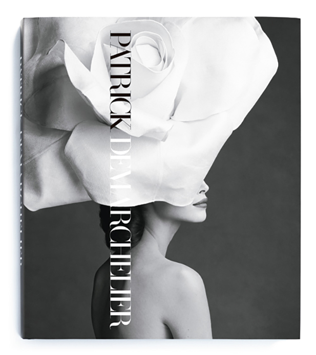

This monograph is the definitive guide to the career of one of
the most prodigious fashion photographers of our time. Published to
coincide with the exhibition Patrick Demarchelier: Images et Mode à Paris
at the Petit Palais, Paris, and featuring more than 400 of Demarchelier's
most telling photographs.
 Part of Steidldangin's new British Influence series, this monograph
presents 80 photographs from the past two decades, beginning with Luchford's
earliest images, which prefigure the gritty, found-light aesthetic that defined
the first half of the 1990s, from the quiet black-and-white portraits of musical
icons such as Ian Brown, to more aggressive street shots of Kate Moss that catch
the spirit of a seedy New York en route to gentrification. This monograph presents
works in a range of media, from 35 mm black-and-white to 8 x 10, to digital formats,
and features an interview with Luchford's long-time friend and artistic collaborator,
painter Jenny Saville.
Part of Steidldangin's new British Influence series, this monograph
presents 80 photographs from the past two decades, beginning with Luchford's
earliest images, which prefigure the gritty, found-light aesthetic that defined
the first half of the 1990s, from the quiet black-and-white portraits of musical
icons such as Ian Brown, to more aggressive street shots of Kate Moss that catch
the spirit of a seedy New York en route to gentrification. This monograph presents
works in a range of media, from 35 mm black-and-white to 8 x 10, to digital formats,
and features an interview with Luchford's long-time friend and artistic collaborator,
painter Jenny Saville.
 In Between delves into Bourdin's career, charting the course of his artistic
development from the 1950s to the 1980s via over 200 superbly printed black-and-white
and color images. It also reassembles many original editorial layouts as they were
first published, in magazines such as French Vogue, British Vogue and Harper's Bazaar,
offering a new critical contexts for approaching his work-for Bourdin tailored his
compositions to the constraints of the printed page, both conceptually and graphically,
and the mirror motif famously central to his work finds its formal counterpart in the
magazine spread.
In Between delves into Bourdin's career, charting the course of his artistic
development from the 1950s to the 1980s via over 200 superbly printed black-and-white
and color images. It also reassembles many original editorial layouts as they were
first published, in magazines such as French Vogue, British Vogue and Harper's Bazaar,
offering a new critical contexts for approaching his work-for Bourdin tailored his
compositions to the constraints of the printed page, both conceptually and graphically,
and the mirror motif famously central to his work finds its formal counterpart in the
magazine spread.
Photographs, Bamako, Mali 1949-1970 draws on an expanded archive to offer over
400 portraits, mostly unpublished, from the height of the photographer's productivity
in downtown Bamako. Providing lushly patterned backdrops and props that now serve to
date distinct periods in his career, the artist often styled his subjects but also
encouraged their active participation, hanging sample portraits around the studio as
inspiration. Migratory youth, government officials, shop owners and Bamako's cultural
elite all make appearances here, and while Keïta's photographs served as both family
record and cultural status symbol for the clients who commissioned them, these images
have become a lasting visual record of Mali at that time.

❮
❯